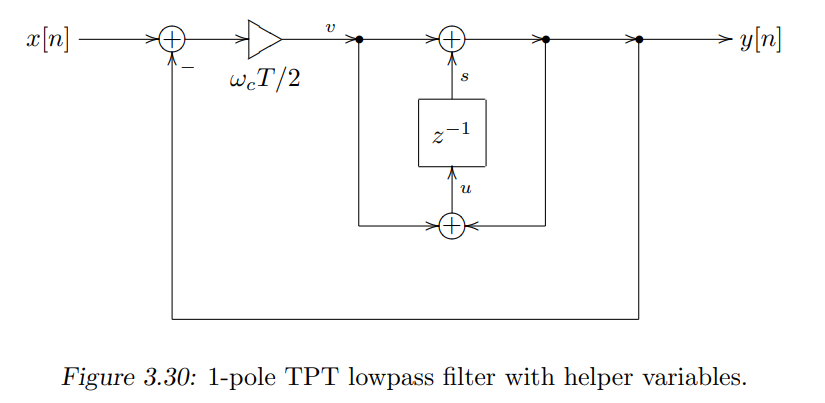

float TickTrapezoidalIntegrator(float x, float w) {
float g = tan(w / 2);
float y = s_ + x;
s_ = y + g * x;
return y;
}
float TickTrapezoidalIntegrator(float x, float w) {
float g = tan(w / 2);
float y = s_ + x;
s_ = y + g * x;
return y;
}

we have
\[yLP=gE+s\]
\[E=x-y\]
so
\[E=\frac{x-s}{1+g}\]
\[yLP=\frac{g}{1+g}x+\frac{1}{1+g}s\]
\[yHP=x-yLP=\frac{1}{1+g}(x-s)\]

float TickTptLP(float x, float w) {
// lowpass
float g = std::tan(w / 2);
float E = (x - s) / (1 + g);
float v = g * E;
// float gLP = g / (1 + g);
// float const v = gLP * (x - s_);
s_ += v;
float const y = s_;
s_ += v;
return y;
// highpass
// return x -y;
}
we have
\[yHP=x-2R*yBP-yLP\]
\[yBP=g*yHP+s1\]
\[yLP=g*yBP+s2\]
so
\[yHP=\frac{x-(2R+g)s1-s2}{1+2Rg+g^2}\]
\[yBP=\frac{g(x-s2)+s1}{1+2Rg+g^2}\]
\[yLP=\frac{g^2x+gs1+(1+2Rg)s2}{1+2Rg+g^2}\]
float TickSVF(float x, float w, float Q) {
float g = tan(w / 2);
float R2 = 1 / Q;
float yHP = (x - (R2 + g) * s1_ - s2_);
float yBP = yHP * g + s1_;
s1_ = g * yHP + yBP;
float yLP = yBP * g + s2_;
s2_ = g * yBP + yLP;
float yBPn = yBP * R2;
return yLP;
}

we have
\[LP[n]=\frac{g}{1+g}E+\frac{1}{1+g}s=A*E+B*s[n]\]
\[u=x-k*LP4\]
\[LP1=Au+B*s1\]
\[LP2=A*LP1+B*s2\]
\[LP3=A*LP2+B*s3\]
\[LP4=A*LP3+B*s4\]
so
\[u=\frac{x-Bk(s4+s3*A+s2*A^2+s1*A^3)}{1+kA^4}\]
float TickTptLP(float x, float& s, float glp) {
float u = glp * (x - s);
s += u;
float y = s;
s += u;
return y;
}
float TickLadderLP(float x, float w, float k) {
float g = tan(w / 2);
// float k = 3.99; // [0,4] => [stable, self-oscillation]
float A = g / (1 + g);
float B = 1 / (1 + g);
float S = s4_ + s3_ * A + s2_ * A * A + s1_ * A * A * A;
float u = (x - B * k * S) / (1 + k * A * A * A * A);
float lp1 = TickLadderLP(u, s1_, A);
float lp2 = TickLadderLP(lp1, s2_, A);
float lp3 = TickLadderLP(lp2, s3_, A);
float lp4 = TickLadderLP(lp3, s4_, A);
return lp4;
}

we have
\[HP[n]=\frac{1}{1+g}(E-s)=A*(E-s)\]
\[u=x-k*HP4\]
\[HP1=A*(u-s1)\]
\[HP2=A*(HP1-s2)\]
\[HP3=A*(HP2-s3)\]
\[HP4=A*(HP3-s4)\]
so
\[u=\frac{x+k(s4*g+s3*g^2+s2*g^3+s1*g^4)}{1+g^4k}\]
float TickTptHP(float x, float& s, float glp) {
float u = glp * (x - s);
s += u;
float y = s;
s += u;
return x - y;
}
float TickLadderHP(float x, float w, float k) {
float g = tan(w / 2);
// float k = 3.99; // [0,4] => [stable, self-oscillation]
float gHP = g / (1 + g);
float A = 1 / (1 + g);
float S = s4_ * A + s3_ * A * A + s2_ * A * A * A + s1_ * A * A * A * A;
float u = (x + k * S) / (1 + k * A * A * A * A);
float hp1 = TickLadderHP(u, s1_, gHP);
float hp2 = TickLadderHP(hp1, s2_, gHP);
float hp3 = TickLadderHP(hp2, s3_, gHP);
float hp4 = TickLadderHP(hp3, s4_, gHP);
return hp4;
}
we have
\[u=x+k*HP2\]
\[LP1=\frac{g}{1+g}u+\frac{1}{1+g}s1\]
\[HP2=\frac{1}{1+g}(LP1-s2)\]
so
\[u=\frac{g^2x-gks2+2gx+ks1-ks2+x}{1+2g+g^2-gk}\]
// k [0,2]
auto TickTranspoceSallenKey(float x, float w, float k) {
struct Output {
float lp2;
float bp2;
float hp2;
} output;
float g_ = tan(w / 2);
float u = g_ * g_ * x - g_ * k_ * s2_ + 2 * g_ * x + k_ * (s1_ - s2_) + x;
u /= (g_ * g_ - g_ * k_ + 2 * g_ + 1);
float lp1 = TickTptLP(u, s1_, glp_);
float hp1 = u - lp1;
output.lp2 = TickTptLP(lp1, s2_, glp_);
output.bp2 = lp1 - output.lp2;
output.hp2 = hp1 - output.bp2;
return output;
}